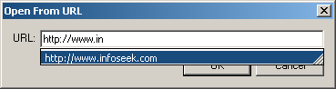

Open From URL feature allows opening of a file located anywhere on the internet, by simply specifying its URL. After the file is downloaded and open inside Bonfire Studio, you can save it to your local hard drive by pressing Save.
Below is a screenshot of the Open From URL dialog:
